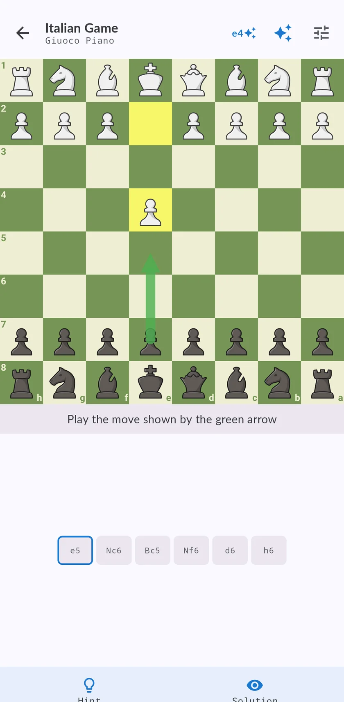

A chess opening trainer with spaced repetition, and a rival that plays like a human
Memorising lines is only half of it.

Why openings slip out of your head
You learn a line, you do not see it on the board for three weeks.
That is spaced repetition.
How the trainer works
- Build your repertoire.
- Play the moves, not the theory.
- Earn the stars.
- Then play it for real.

Why practise against Maia
A normal engine answers your opening with the best move every time.
What is free
The Italian Game is free, in full and from both sides.
Questions
What is the best way to learn chess openings?
Learn a small repertoire you will really play.
Which opening should a beginner learn?
The Italian Game is a good first opening with White.
What is spaced repetition in chess?
A way of reviewing lines at growing intervals.
Does it work on iPhone and Android?
Yes, on iPhone, iPad and Android.